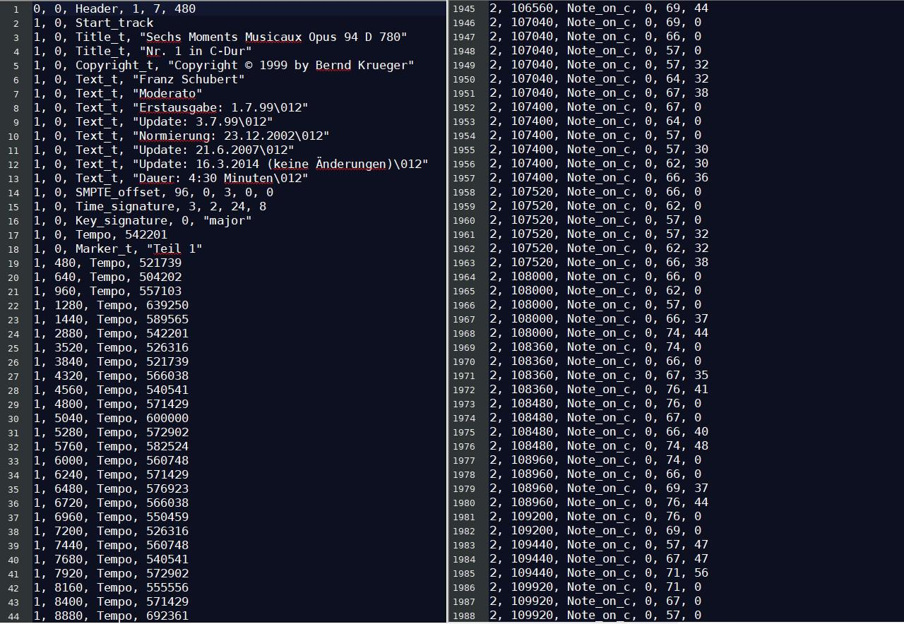
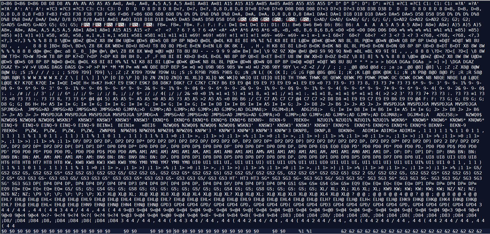

Nous y voici, il est temps de coder notre magnifique compositeur de musique ! Pour le côté technique, nous utiliserons le langage Python, pour lequel on trouve des bibliothèques donnant une implémentation des réseaux de neurones ! Et oui, désolé, mais nous n'allons pas coder nous mêmes notre propre réseau de neurones. La bibliothèque python que nous allons utiliser est nommée Keras. Elle est performante pour réaliser de la prédiction de caractères : étant donné un texte de départ, elle va pouvoir prédire quels sont les caractères les plus susceptibles d'apparaître ensuite. On voit ainsi notre premier défi : convertir de la musique en texte !
Les fichiers musicaux sont usuellement stockés dans un format particulier : outre les types audio (mp3, wav, aac), il existe un format qui contient beaucoup plus d'informations : le format midi. On y trouve l'ensemble des notes jouées, chacune de leur vélocité, le tempo etc. Un petit utilitaire gratuit nous permet de convertir un fichier midi en un fichier csv : c'est un texte respectant un certain format. Voyez plutôt par vous-mêmes.
On peut repérer plusieurs informations sur ce fichier : celle qui va nous intéresser est l'instruction Note_on_c. Elle indique qu'une note est jouée, et fournit plusieurs informations sur cette dernière (temps, hauteur, vélocité). Voici la structure adoptée par le format csv :
Numéro de la piste, Temps, Note_on_c, Numéro du canal, Numéro de la note, Vélocité
Par exemple, l'instruction 2, 4800, Note_on_c, 0, 60, 56 signifie que sur la deuxième piste, sur le canal numéro 0, au temps 4800, la note numérotée 60 (en l'occurrence un do, sur la troisième octave) est jouée avec une vélocité de 56. Les temps considérés sont des temps MIDI absolus (ils ne dépendent pas du tempo), et on en trouve 1920 unités par mesure. Quant à la vélocité, elle est quantifiée de 0 à 127, 0 signifiant que l'on relâche la note, et 127 signifiant que la note est très forte.
Pour utiliser efficacement la prédiction de texte, nous allons réécrire la musique sous la forme suivante :
Voici l'implémentation de cette méthode :
Essayons d'appliquer ce script à un fichier csv : le résultat ressemble à ceci :
Ce n'est certes pas très digeste à la lecture, mais un ordinateur ne saurait (sans entraînement, tout du moins) faire la différence entre ceci et un poème d'Arthur Rimbaud !
On peut alors se constituer un long fichier texte comportant de nombreux morceaux de musique, qui nous servira de base d'apprentissage.
Nous sommes uniquement à quelques lignes de code du but : programmer notre ordinateur pour q'il puisse composer. Il reste à écrire le code d'apprentissage et celui de création. Je vous économise ces efforts, les voici :
Et si on faisait un petit jeu ? Voici quelques bribes de morceaux que mon ordinateur a composé par lui-même, après différents temps d'apprentissage. Saurez-vous les classer dans l'ordre chronologique de l'apprentissage ?
Extrait n°1
Extrait n°2
Extrait n°3
Extrait n°4
Extrait n°5
Extrait n°6